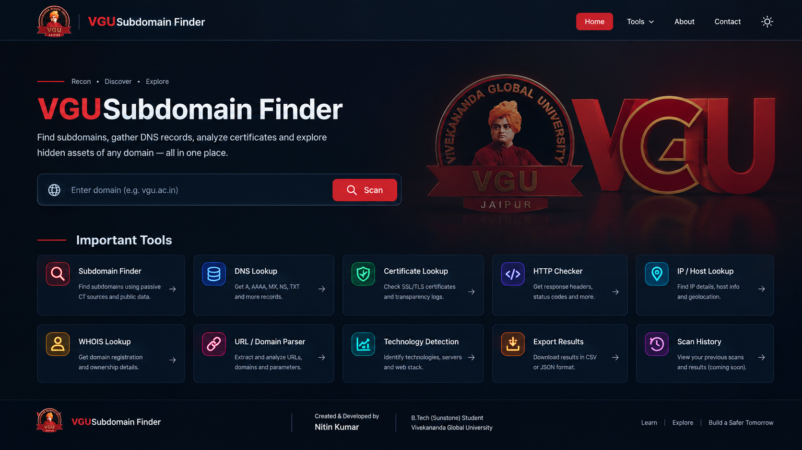

VGUZeroTrace
Find subdomains, gather DNS records, analyze certificates and explore domain information — all in one place.

Scan Results
Discovered information will appear here.
| Domain / Record | Status | Details | Source |
|---|---|---|---|
| No results yet. Enter a domain above. | |||
Important Tools
Subdomain Finder
Discover subdomains using passive Certificate Transparency sources.
DNS Lookup
Check A, AAAA, MX, NS, TXT and other DNS records.
Certificate Lookup
Inspect SSL/TLS certificates and transparency records.
HTTP Checker
Check HTTP status information and response details.
IP / Host Lookup
Find IP and basic host information.
WHOIS Lookup
View domain registration and ownership information.
URL / Domain Parser
Extract domains, paths, parameters and URL details.
Technology Detection
Identify basic web technologies and server information.
Export Results
Export scan results in CSV or JSON format.
Scan History
View previous scans and saved results.
About ZeroTrace
Learn • Explore • Build a Safer Tomorrow
VGU ZeroTrace is a reconnaissance and domain-information platform designed for learning, authorized security research and responsible security testing.
The platform brings useful passive reconnaissance tools together in one place.